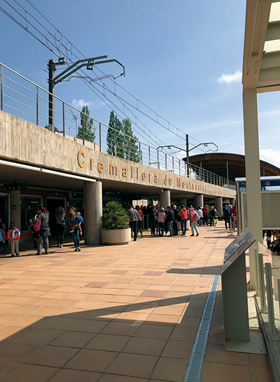
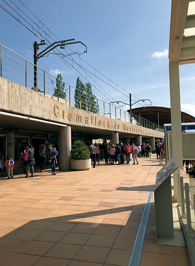

La cathédrale de Barcelone (située dans le quartier gothique) est la cathédrale gothique de Barcelone dont la construction a commencé le 1er mai 1298, également connue sous le nom de Cathédrale Seo ou Seu. est l’un des plus représentatifs de l’architecture catalane. Autant d'édifices religieux ont dû être construits lentement.
Au 19ème siècle, la façade principale fut construite, la cathédrale mesurait 90 mètres de long sur 40 de large, le jardin du cloître faisait 25 mètres et le cloître fut construit aux XIVe et XVe siècles. La cathédrale est dédiée à la Sainte Croix. Il y a également le temple de la Sainte-Croix, qui est l’un des plus anciens.
Ses murs cachent des histoires de la vieille ville de Barcelone et sa façade est l'une des plus photographiées. Le cloître, avec les oies blanches de Santa Eulalia, les cinq portes d'accès, l'oeuf dansé ou les 200 gargouilles observées depuis le toit sont quelques-unes des découvertes qui doivent être faites dans ce ragoût.

Le mur du baiser est très proche de la cathédrale. Il s’agit d’une peinture murale composée de 80 colonnes et de 50 rangées, avec environ 4 000 photos. La murale est intitulée "Le monde est né dans chaque baiser", est faite en commémoration du tricentenaire de 1714.


La vierge, également appelée la Moreneta, est la patronne de la Catalogne et l’un des sept patrons des communautés autonomes d’Espagne. C'est un endroit très visité, grâce à la quantité de choses que vous pouvez trouver, vous pouvez partir en voyage et voir et en savoir plus sur cet endroit et passer un bon moment en famille ou entre amis.
L'origine historique du sanctuaire de la Vierge de Montserrat est l'ermitage de Santa María. Au cours des XVIIe et XVIIIe siècles, le monastère de Montserrat devient un centre culturel de premier ordre. Des compositeurs importants émergent de l'école de musique de Montserrat. 1844 commence la restauration de ce même

En l'an 1025, ils ont trouvé un nouveau monastère à côté de l'ermitage. En 1409, le monastère de Montserrat devient une abbaye indépendante. Entre les années 1493 et 1835, le temps des réformes de croissance et de splendeur.
Au cours des XVIIe et XVIIIe siècles, le monastère de Montserrat devient un centre culturel de premier ordre.
Des compositeurs importants émergent de l'école de musique de Montserrat. Mais en 1844 la restauration a commencé
la guerre civile espagnole (1936-1939) signifie un nouvel abandon du monastère. Le gouvernement de Catalogne, cependant, conserve.

 

Il permet de franchir une pente maximale de 65,5% en sept minutes, jusqu'à 1 000 m d'altitude. Déjà au sommet, dans le plan des tarentules, offre une vue imprenable sur le monastère, les régions de la Rodia et les Pyrénées
Il unit le monastère à l'endroit où, selon la légende, l'image de la Vierge de Montserrat aurait été retrouvée. Le funiculaire part sur la place où commence le chapelet monumental, le plus important groupe sculptural en plein air du modernisme catalan.

Le palais national, situé à Montjuïc, est un palais construit entre 1926 et 1929. Il a une superficie de 32.000 m2. Style classique inspiré de la Renaissance espagnole, avec un sol rectangulaire à deux corps latéral et un carré arrière.
Le Palais national a été consacré à l'exposition d'art espagnol avec plus de 5.000 œuvres du monde entier. Territoire de l'Etat. Entre 1996 et 2004, le palais subit une extension de charge dans le but de créer des espaces pour pouvoir mettre toutes les œuvres de la collection.


Au sommet du Cerro de la Robleda pendant la guerre civile espagnole, il installe une batterie anti-aérienne. L’objectif était de protéger la ville de Barcelone de l'aviation fasciste italienne qui a utilisé une tactique sanguinaire appelée "bombardement" sur le tapis".
Les attaques éclair ont fait environ 800 morts, plus d’un millier de blessés et une destruction totale. d'environ 50 bâtiments. La ville avait pour seule défense un vaste réseau d’abris souterrains et cette système de batterie antiaérienne..
Initialement, les bunkers étaient conçus pour loger deux canons, mais ils ont finalement été aménagés en 1938 avec 4 canons. Vickers de 105 mm.
Entre le 25 et le 26 janvier 1939, au moment du retrait, l'armée républicaine a désactivé les pièces d'artillerie, mais ne les a pas retirés. Après la guerre civile, tout l'espace a été laissé en désuétude, laissant les restes des constructions de batteries abandonnées.


Ce monastère nous montre l'art et la culture Bouddhiste Il est situé dans le parc naturel de Garraf, dans l'urbanisation de Plana Novella, dans un environnement naturel, où vous pourrez vous promener à travers les montagnes avec des vues incroyables et des itinéraires d'accès très variés.
Le monastère lui-même a également plusieurs itinéraires, où avant une grand-mère une ferme d’animaux, il y a maintenant des vignes où les gens peuvent aller chercher gratuitement. Vous pouvez accéder au monastère en voiture, à pied, à vélo (etc ...). On peut également y accéder par les transports en commun, vers le centre de Garraf, ne peut pas prendre le bus ou le train
Prix: Gratis.